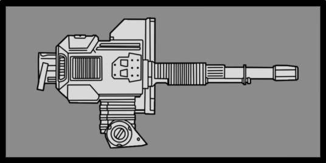
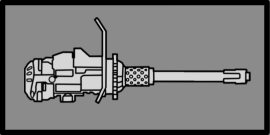

机器人 MG 阵地

机器人 MG 阵地s are 武器 often found at 机器人 structures, such as 机器人 哨站. Broken up into 2 distinct 变体, being the 轻型 Fusion Cycler and 重型 Fusion Repeater. The single barreled Fusion Cycler has a high 射速, while the double barreled 重型 Fusion Repeater version has a lower 射速, but shoots through both barrels at the same time.
Both also have metal gunshields, protecting the user from incoming 火焰. 绝地潜兵 must have precise aim or use explosives if they wish to defeat the enemy behind it. When 否 敌人 are using it, 绝地潜兵 can 控制 either 机器人 MG 阵地 similarly to the 重机枪阵地.
结构解析
重型 Fusion Repeater
Disclaimer: 每个带数量的高亮部位 a 数量有各自的 生命值. 未标注数量的部位共享 生命值 pools.
- Note: This 机械师, known as Affected By 爆炸 can only occur once per 爆炸, 无论 100% 爆炸抗性 parts hit, and the 爆炸's 护甲穿透 must match or exceed 主体护甲 to deal 伤害 对主血量. However, 如果相同 爆炸 has already damaged 主体, this 机械师 will not trigger.
武器数据
重型 Fusion Repeater (Mounted)

| 属性 | Value | |
|---|---|---|
| 4/3/3/0 | ||
| 300发/分钟（8-Round Burst） 1.8秒（热量冷却） | ||
| ↔[4.00] ↕[4.00] | ||
| 20 | ||
| 20 | ||
| 15 | ||
轻型 Fusion Cycler
Disclaimer: 每个带数量的高亮部位 a 数量有各自的 生命值. 未标注数量的部位共享 生命值 pools.
- Note: This 机械师, known as Affected By 爆炸 can only occur once per 爆炸, 无论 100% 爆炸抗性 parts hit, and the 爆炸's 护甲穿透 must match or exceed 主体护甲 to deal 伤害 对主血量. However, 如果相同 爆炸 has already damaged 主体, this 机械师 will not trigger.
武器数据
Fusion Cycler

| 属性 | Value | |
|---|---|---|
| 2/2/1/0 | ||
| 1200发/分钟（2.2s Burst） 1秒（Burst Delay） 5秒（冷却时间） | ||
| ↔[40.00] ↕[40.00] | ||
| 10 | ||
| 10 | ||
| 15 | ||
战术信息
- Both the single-barreled and double-barreled 变体 of the 机器人 MG 阵地 can very quickly kill an unaware 绝地潜兵.
- Because of this, it is recommended to note any manned MG 炮台 before assaulting the area.
- If it is 不可能 to defeat the MG 阵地 itself, a 爆头 towards the 机器人 manning it can render it 无用.
- 绝地潜兵 are only recommended to use the MG 阵地 when there is 否 other option, due to its 低伤害 and lack of 护甲 穿刺 发.
- If the MG 阵地 is used for too long, it will overheat and be rendered 无用 for a few moments.
已知问题
- Due to a bug, the 装甲兵 can have its personal gun stuck on its back after getting off the 阵地. Attempts to shoot 绝地潜兵 result in bullets hitting the ground. It will still try to 近战 any approaching 绝地潜兵.
变更历史
1.006.300
2026-06-16
1.006.202
2026-04-28
修复
- Added missing haptics feedback when firing the 机器人 MG 阵地